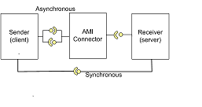

|
|
|
This tutorial explains how to use Asynchronous Method Invocation for CCM (AMI4CCM). The AMI Connector component handles the asynchronous invocation using CORBA AMI.
The system consists of three components:
A Sender component
A Receiver component
An AMI4CCM connector
In this tutorial a Sender wants to invoke methods on the Receiver asynchronously and synchronously. Therefor the Sender and the Receiver are connected via an AMI connector for the asynchronously invoked methods and via a direct connection for the synchronously invoked methods. The AMI connector itself will be completely generated by IDL and will handle details of executing the asynchronous invocation and callback to the user component. The Receiver (Server side) isn't aware of any AMI clients.

There are different methods used in this example in order to show different aspects:
method with return value, in- and out argument:
long foo (in string in_str, out string answer);
void method with out argument:
void hello (out long answer);
method to set and get an attribute:
attribute short rw_attrib
getraises (InternalError)
setraises (InternalError);
method to get an readonly attribute:
readonly attribute short ro_attrib raises (InternalError);
The following convention is used:
|--*_asm : Directory contains an assembly.
|--ports : Directory contains common IDL code for the assembly.
|--*_comp : Directory contains an component.
|-- ports : Directory contains common IDL code for the component.
|-- src : Directory contains the IDL and *_exec-files for the component.
The following convention is used:
*_defn.idl - These files will contain definitions, like enumerations, constants and so on. Typically located in *_asm/ports.
*_obj.idl - These files will contain the interfaces between components. Typically located in *_asm/ports.
*_comp.idl - These files will contain the component declaration. Typically located in *_asm/*_comp/src.
MPC files are located in the same directory as the IDL for the common mpc files and in the same directory as the executor files for the component mpc files.
Files that were generated by the TAO IDL compiler should all be located in one subdirectory. In this tutorial the name of this subdirectory is "GeneratedCode".
|
|